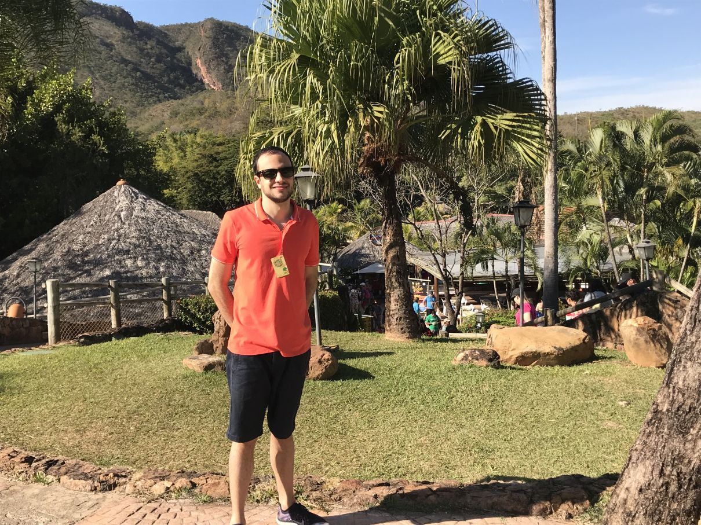

André Duarte Palhares
Resumo | Habilidades | Links

Um breve resumo
Sou natural de Belo Horizonte/MG e aqui moro desde que nasci, em 1990. Desde criança me interesso por eletrônicos e tecnologia, o que me fez cursar Engenharia de Controle e Automação. Trabalho desde 2014 com o ramo da domótica e agora irei me aprofundar em desenvolvimento web na Trybe!! Outros interesses são: arquitetura, música, prédios, elevadores (sim, tenho um simulador deles no meu computador), (geo)política, economia, investimentos e tecnologias de uma forma geral.
Habilidades
- Sei escrever, ler, dirigir...
- Brincadeiras, hehehe... na verdade tenho outras habilidades como
- Conhecimento em eletrônica e PCs
- Redes LAN e Wi-Fi
- Windows e Linux
- Sistemas de automação residencial
- Delphi
- Organização (uma rara soft-skill)
- Curiosidade
- I speak English as well
- E, em breve, HTML, CSS, JavaScript e muito mais!!
Link para um site legal que você nunca ouviu falar
Gostou da minha foto? Clique aqui, mas só se ela não estiver aparecendo totalmente...
v1.05